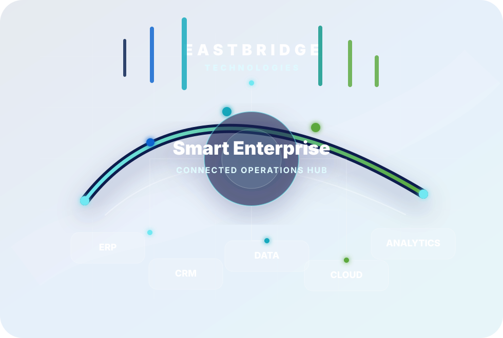

TP
Thanh Mai Pham
Co-Founder & CEO / Vietnam Business LeadVietnam business leadership, customer engagement, local operations and operational growth.
EastBridge Technologies is being developed as a Vietnam and ASEAN focused enterprise solutions company for ERP, CRM, integration, custom applications, automation and AI-enabled process improvement.

We help organizations move from fragmented operations to connected, measurable and scalable digital systems. Our positioning combines practical ERP implementation knowledge, cloud application delivery, integration architecture and business process improvement.
EastBridge is designed for companies that need more than software licensing: they need process clarity, configuration support, data migration planning, integration, training, reporting and long-term system improvement.
A complementary founding team covering Vietnam operations, enterprise technology, solution architecture and regional growth.
Vietnam business leadership, customer engagement, local operations and operational growth.
ERP implementation, enterprise architecture, digital transformation, integration and solution design.
Strategic partnerships, regional business development, go-to-market growth and sustainability initiatives.
Enterprise solution architecture, ERP/CRM platforms, healthcare systems, e-invoicing, service planning and scalable application delivery.
Our delivery approach combines proven enterprise architecture thinking, agile implementation practices and post-go-live continuous improvement.
Clarify business goals, stakeholders, pain points, current workflows, data sources and success criteria before recommending any system.
Evaluate ERP, CRM, integration, reporting and automation needs against practical implementation readiness and operational constraints.
Design the target operating model, application architecture, workflows, data flow, roles, controls and integration approach.
Configure platforms, build extensions, migrate data, integrate systems, test scenarios, train users and prepare cutover.
Support go-live, monitor adoption, refine reports, improve automation and identify the next wave of measurable business value.